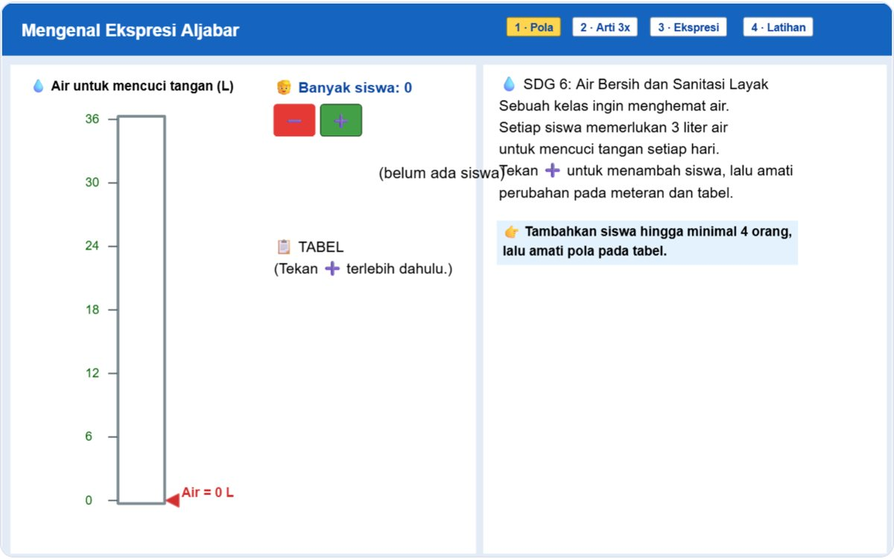
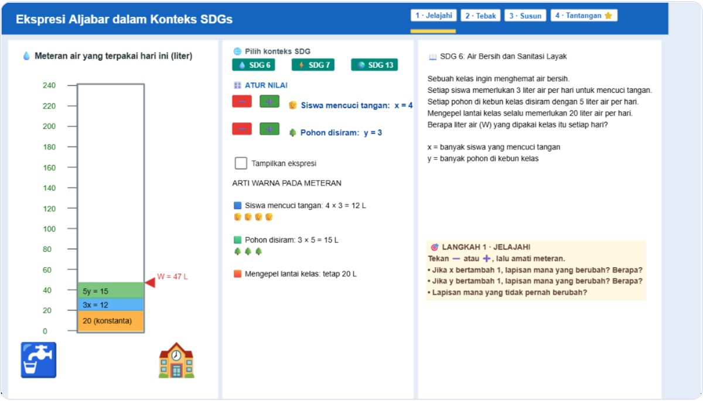

GeoGebra · yapay zekâ öğretmen · matematiksel akıl yürütme
Soruyla karşılık veren öğretmen.
Öğrenciler bir GeoGebra uygulamasında soru çözer. Gorga’nın yapay zekâ öğretmeni Poda cevabı vermez. Soru sorar, ekranda tek bir noktayı gösterir ve öğrenci akıl yürütmesini kendisi bulup açıklayana kadar bekler.
Etkinliklerin kendisi şimdilik İngilizce ve Endonezce olarak sunuluyor.
- L1–L4öğretmenin destek adımları
- Cevap sızmazher yapay zekâ cümlesi önce denetlenir
- CSVaraştırma için tur tur kayıt
IBir konuşma
Öğrenci sıfırı kendisi bulur.
Soru: sıcaklık −6 °C; 4 °C’ye ulaşmak için ne kadar artmalı? Öğrenci birer birer sayarak 10 cevabını zaten verdi. Protokol, öğretmenin “sıfır” demesini yasaklar. Poda’nın onu oraya nasıl yönlendirdiğine bakın.
Öğrenciyani -6’dan -5’e, sonra -4’e, sonra -3, -2, -1, sonra 0’a çıktım. Sonra 1, 2, 3 ve en son 4’e.
Poda-6’dan -5, -4, -3, -2, -1 üzerinden 1, 2, 3 ve 4’e çıktın. 1’den önceki belli bir sıcaklığı geçerken ne oluyor?L4
Öğrenciha, önce sıfırda durmak
PodaÖnce sıfırda duruyorsun. -6’dan 0’a ve sonra 0’dan 4’e olan artışı nasıl sayıyorsun?L4
Öğrenci-6’dan 0’a 6 artıyor
Poda-6’dan 0’a 6 artıyor. Peki 0’dan 4’e ne kadar artıyor ve bu toplam artışı nasıl veriyor?L1
Öğrencisonra 4 daha, yani 10
PodaCevabın doğru. Artışı iki parçaya ayırdın: -6’dan 0’a 6 derece, sonra 0’dan 4’e 4 derece, toplam 10 derece.
IIÖğretmenin protokolü
Takılınca artan, başarınca azalan yardım.
Poda, öğretmenin destek (scaffolding) çerçevesini izler. Teşhisle başlar, öğrenci ilerleyemediğinde desteği artırır ve öğrenci akıl yürütmesini açıkladığı anda desteği geri çeker. Cevap yine de öğrenciden gelmelidir.
-
L1 · Probe
Sormak
Öğrencinin neyi fark ettiğini, ne yaptığını ya da ne düşündüğünü görmek için açık bir soru. Henüz hiçbir şey gösterilmez.
“Termometrede −6 ile 4’ün konumlarıyla ilgili neyi fark ediyorsun?”
-
L2 · Point
Göstermek
Dikkati uygulamadaki önemli tek bir özelliğe çeker, ne anlama geldiğini söylemeden.
“Termometrede −6’ya ve 0’a bak. −6, 0’a göre nerede?”
-
L3 · Focus
Odaklamak
Görevi, cevaplanabilir tek bir küçük alt soruya indirir; yöntemi vermez.
“Önce, −6 °C’den 0 °C’ye kaç derece artıyor?”
-
L4 · Revoice & fade
Açıklamak, sonra bırakmak
Başarıdan sonra öğrenci akıl yürütmesini uygulamayla açıklar. Poda yeni bir açıklama eklemeden onaylar, sonra destek geri çekilir.
“Şimdi termometreyle, toplam artışın neden 10 °C olduğunu açıkla.”
Çerçeve: van de Pol, Volman & Beishuizen (2010); van de Pol & Elbers (2013); Wood, Bruner & Ross (1976).
- Cevap sızmazHer yapay zekâ cümlesi denetlenir: öğrencinin henüz bulmadığı sayılar geçemez.
- Etiket değil içerikDenetim cümlenin ne dediğini okur. Soruyu yine de parçalayan bir “L4” reddedilir.
- Her zaman yedek varYapay zekâ bir kuralı çiğnerse öğrenci, öğretmenin onayladığı bir senaryo cümlesi alır.
IIINasıl çalışır
Sınıfta üç adım.
Kurulacak bir şey yok. Öğrenciler dizüstü bilgisayarda ya da tablette bir bağlantı açar.
- 1
Uygulamada çalış
GeoGebra uygulamasında işaretçileri kaydır, cevabını yaz, Kontrol Et’e bas. Poda cevabı ve işaretçilerin yerini doğrudan uygulamadan okur.
- 2
Yolunu açıkla
Poda not vermez. Öğrencinin oraya nasıl vardığını, kendi gündelik sözcükleriyle sorar.
- 3
Kendin bul
Hedef akıl yürütme ortaya çıkana kadar adım adım. Yol, uygulamanın altında motif olarak çizilir.
IVÖğretmenler ve araştırmacılar için
Her tur kaydedilir.
- Öğretmen moduHer yanıtta L1–L4 etiketi ve yapay zekânın okumak zorunda kaldığı cevaplarda bir işaret.
- Oturum özetiTur sayısı, adımların dağılımı, senaryoya karşı yapay zekâ yanıtları ve akıl yürütmenin bulunmasına kadar geçen süre.
- Kayıt ve dökümAnaliz için tur tur CSV indir ya da konuşma dökümünü kopyala.
- Sınıf bazında kayıt sonraki aşamaSınıf kodları; veriler araştırma için otomatik kaydedilir.
VEtkinlikler
Her konu için bir pencere.
Etkinlikler pencerelerde toplanır. Tam Sayılar penceresi, öğretmenin yedi iklim eylemi etkinliğini içerir. Her uygulama, öğretmenin destek çerçevesini izleyerek her soru için bir görev kartıyla tam protokolü kullanır.
-
 Tam protokol · YZ
Tam protokol · YZ
Sıcaklık Ölçeği
0 °C’yi geçen sıcaklık değişimlerini karşılaştırma ve hesaplama.
Tam protokol Etkinliğin kendi soruları (9) -
 Tam protokol · YZ
Tam protokol · YZ
Karbon Dengesi
Balonlar (yukarı) ve kum torbalarıyla (aşağı) tam sayılarda toplama.
-
 Tam protokol · YZ
Tam protokol · YZ
Deniz Seviyesi
Deniz seviyesinin üstündeki ve altındaki konumlar için pozitif ve negatif sayılar.
-
 Tam protokol · YZ
Tam protokol · YZ
Çevre Dostu Ulaşım
Yön, hız ve yürüme süresi üzerinden tam sayılarda çarpma.
-
 Tam protokol · YZ
Tam protokol · YZ
Sürdürülebilir Kararlar İçin Örüntüler
Pozitif ve negatif tam sayılarda çarpma ve bölme örüntüleri.
-
 Tam protokol · YZ
Tam protokol · YZ
Ağaçlandırma Planı
Fidan planlamak için kesirlerde bölme.
-
 Tam protokol · YZ
Tam protokol · YZ
Karbon Salımını Tahmin Etme
Ondalık çarpımları yuvarlayarak ve alan modeliyle tahmin etme.
-

Tam protokol · YZÖrüntüyü Bul, İfadeyi Keşfet!
Öğrenci başına el yıkama suyu: tablodaki örüntüden 3x ifadesine.
-

Tam protokol · YZGezegenimizi Koruyalım
W = 3x + 5y + 20 ifadesi üç SDG görevinde: su, enerji ve iklim.
Bu pencere bir sonraki aşama için hazırlandı. Etkinlikler öğretmenle birlikte eklenecek.
Gorga hakkında
Cevap vermeyen, yol gösteren bir öğrenme alanı.
Gorga, ortaokul matematik eğitimi için bir araştırma platformudur. Öğretmenin GeoGebra etkinlikleri, öğretmenin destek protokolünü izleyen yapay zekâ öğretmen Poda ile eşleştirilir: öğrenciler uygulamada çalışır, düşüncelerini açıklar ve akıl yürütmeyi kendileri bulur. Öğretmenler ve araştırmacılar her turun kaydını alır.
Ad, Kuzey Sumatra’daki geleneksel Batak evlerinin oyma süslemesi gorgadan gelir; üç rengi vardır: kırmızı, beyaz ve siyah. Desenleri simetri, yansıma ve tekrarla doludur. Matematik uzun zamandır onun içinde yaşıyor.
Poda, Toba Batak dilinde nazik ve dolaylı biçimde verilen öğüt demektir. Öğretmen de böyle çalışır: cevap vermek yerine sorularla yol gösterir.